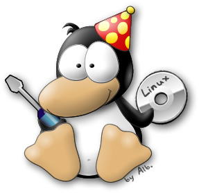

RELug
Reggio Emilia Linux User Group
Vuoi conoscere cos'è e com'è nato Linux ?
Vuoi muovere i tuoi primi passi nel mondo GNU/Linux ma non sai bene come orientarti ?
RELug
Reggio Emilia Linux User Group
è un'associazione culturale no profit , nata con lo scopo di favorire la più ampia diffusione dell'informatica e dell'utilizzo del Software Libero , ritenendo che sia l'unico strumento che permetta una diffusione delle tecnologie informatiche senza vincoli che le restringano ad una parte della società
Attivita` principali dell'associazione
Linux Day
Il Linux Day è una manifestazione nazionale articolata in eventi locali che ha lo scopo di promuovere GNU/Linux e il software libero.
Il Linux Day è promosso da ILS (Italian Linux Society) e organizzato localmente dai LUG italiani e dagli altri gruppi che condividono le finalità della manifestazione
Linux Day
La responsabilità dei singoli eventi locali è lasciata ai rispettivi gruppi organizzatori, che hanno libertà di scelta per quanto riguarda i dettagli delle iniziative locali, nel rispetto delle linee guida generali della manifestazione.
La prima edizione del Linux Day si è tenuta il 1 dicembre 2001 in circa quaranta città sparse su tutto il territorio nazionale.
Il numero è notevolmente cresciuto negli anni divenendo ormai un appuntamento immancabile nel panorama del software libero italiano.
Linux Day
La data prestabilita per il Linux Day è ogni quarto sabato di ottobre. E' possibile che la manifestazione inizi anche qualche giorno prima della data prestabilita e che termini qualche giorno dopo, purchè l'evento principale si tenga il quarto sabato di ottobre.
Il Linux Day si svolge in maniera parallela in diverse città italiane.
RELug gestisce e organizza l'evento nel territorio di
Reggio Emilia.
Linux Install Party
I L.I.P. sono delle giornate organizzate dai LUG (Linux User Group) per installare il sistema operativo GNU/Linux a chi desidera averlo sul proprio PC.
Il RELUG organizza solitamente tale evento durante il Linux Day in un'apposita area dedicata: è anche vero però che se la richiesta di Linux è alta, possono essere organizzate delle giornate dedicate al solo L.I.P.
Linux per le scuole
I vantaggi del software libero rispetto al software proprietario sono molteplici.
In ambito scolastico consente una completa libertà di azione ai responsabili dei laboratori informatici, i quali non hanno necessità di chiedere permessi ad alcuno nè chiedere "soldi" per il sistema operativo che fa funzionare i computer.
Il software libero può essere liberamente modificato e adattato alle esigenze di ogni scuola ed è esente da virus.
Linux per le scuole
LTSP (Linux Terminal Server Project)

Linux per le scuole
LTSP (Linux Terminal Server Project)
Architettura informatica costituita da un server e da una serie di terminali, privi di disco rigido, quindi senza sistema operativo locale, i quali attingono le risorse dal server attraverso la rete dati.
Il sistema è centralizzato, l'installazione e la manutenzione riguardano prevalentemente il server, con notevoli risparmi di tempo e denaro.
I client possono essere ottenuti dal Trashware, macchine obsolete non più utilizzabili come pc (personal computer).
Attivita` parallele
RaspiBo
Alcuni di noi, partecipano (anche attivamente) alle serate NON Corso di Informatica, Elettronica e Meccanica in Salsa Libera promosse e realizzate a Bologna su iniziativa di: Renzo Davoli, RaccattaRAEE, ERLUG e BFSF.
Maggiori informazioni le trovate qua: http://www.raspibo.org